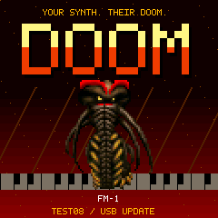
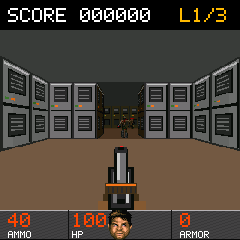
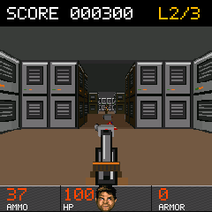
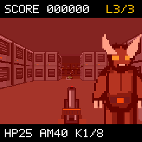

New sound effects
Synthesized shotgun blasts, reload clicks, growls, impacts and pickup tones. FM-1 MASTER controls output.
REAL DOOM ENGINE · EXPERIMENTAL TEST06
Your synth has a dark side. Three levels, a loaded shotgun, and a very different use for those piano keys.
FM-1 · SMK-37 Pro · SMK-37 Elite
Custom firmware by Chance Roth / @ChanceTheMaker

SMALL SCREEN. BIG TROUBLE.
Guards, imps, pickups, points.
And yes, it makes noise now.



Actual Test06 engine output rendered at the device’s 240 × 240 display resolution on the host test harness.
Synthesized shotgun blasts, reload clicks, growls, impacts and pickup tones. FM-1 MASTER controls output.
Shaded pixel art, directional views, attack poses and death animations. Guards score 100; imps score 200.
Movement, strafing, fire and menus on the white keys. No PC needed once the game is installed.
CHOOSE YOUR WEAPON
The browser builds the correct firmware for your model using a checksum-verified base. No command line, and no firmware file upload needed when the automatic download is available.
Loading build details…
This replaces the synth application. Back up your projects first. Doom currently has no USB MIDI updater and no saves. Returning to synth firmware or updating an installed Doom build requires a XIAO recovery adapter configured for your exact device. FM-1 and SMK write ranges differ.
This is experimental firmware. Hardware coverage differs by model; see the status above. Power loss or an incompatible setup can leave the device needing recovery. No warranty is provided.
Checking builds…
The same SHA-256 and model checks apply. FM-1 accepts the pinned Felucca Salt14 base; SMK accepts its official 016 .fwsc. The file stays in your browser.
Ready for a little controlled chaos.
LESS PRACTICE. MORE FIREPOWER.
Count the white keys from the far left.
FM-1 starts at F; SMK starts at C.
Keep moving. Face the wall switch in the last room and press Use to exit. Fire or Use advances from results; Use retries after death.
Menu navigation. 2 up, 4 down, 1/3 adjust, 8 select, 7 close. SMK PATCH opens the menu and PARA selects. Sound volume is under Options → Sound.